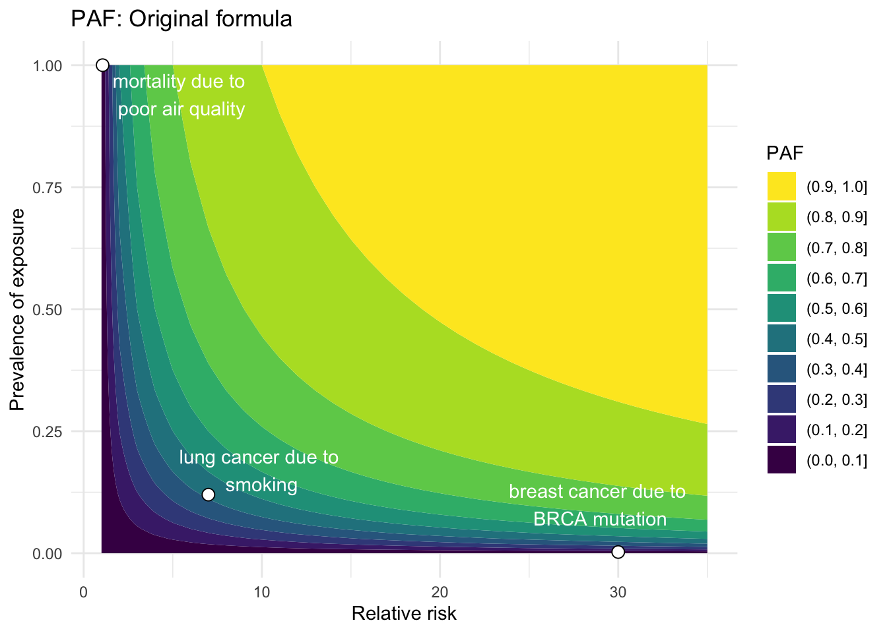
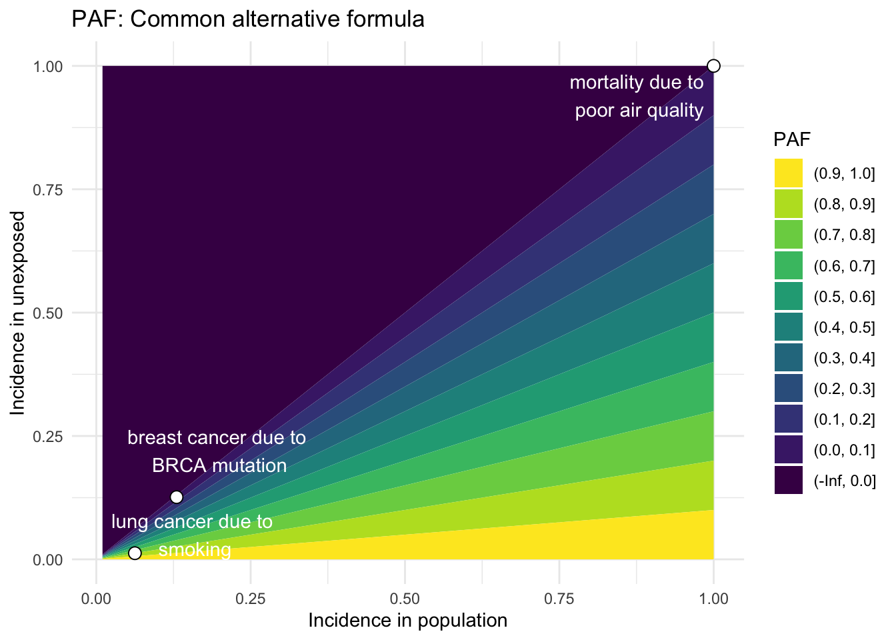
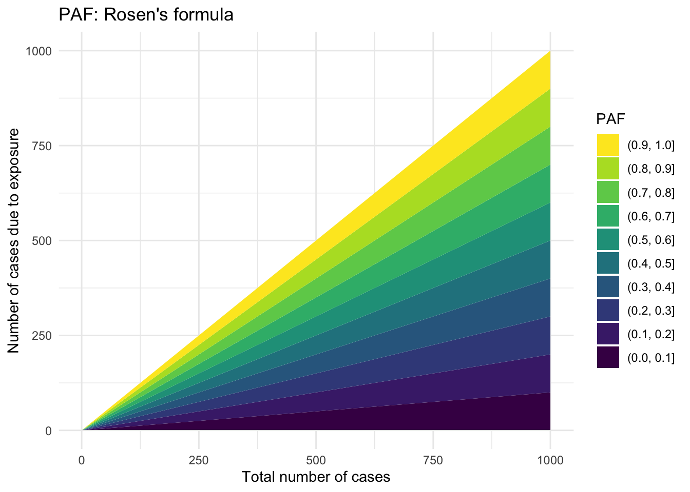
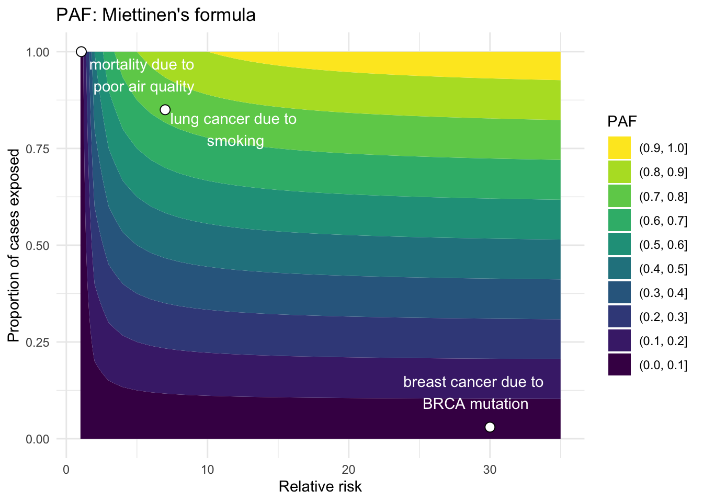

In the last section, we discussed individual risk and realized that it was really hard to estimate! Fortunately, we found that population-level estimates were much easier to make. We also discussed how risk estimates were based on a model with specific covariates comprising a set of risk factors and potential confounding variables. In this page, we ask questions surrounding how risk for a disease would change at a population level if a risk factor were eliminated - e.g. imagine a world where no one smokes, everyone drinks clean water, we all exercise regularly, etc. Let’s explore this concept called “population attributable fraction” or PAF.
Show the code
# Turn off axesNoax <-list( title ="",zeroline =FALSE,showline =FALSE,showticklabels =FALSE,showgrid =FALSE)# Set up vector for diseased individuals to be colored differentlyN <-100diseased_inds <-union(union(seq(8,100,10),seq(9,100,10)),seq(10,100,10))diseased_vec <-vector(mode ="character", length =100)diseased_vec[diseased_inds] <-'rgb(255, 65, 54)'diseased_vec[-diseased_inds] <-'rgb(66, 209, 209)'risk_factor_inds <-c(1:20)risk_factor_vec <-vector(mode ="character", length =100)risk_factor_vec[diseased_inds] <-'rgb(255, 65, 54)'risk_factor_vec[-diseased_inds] <-'rgb(66, 209, 209)'risk_factor_vec[risk_factor_inds] <-'rgb(0,0,0)'#'rgb(145, 0, 0)'# Set up text vectorz_text <-vector(mode ="character", length =100)z_text[diseased_inds] <-"sick"z_text[-diseased_inds] <-"healthy"z_text[risk_factor_inds] <-'risk factor'data_100_diseased_RF <-data.frame(x =rep(seq(1,10,1), each =10), y =rep(seq(1,10,1), times =10), z = z_text)fig_100_diseased_RF <-plot_ly(data_100_diseased_RF, x =~x, y =~y, text =~z, type ='scatter', mode ='markers', marker =list(size =20, opacity =0.7, color = diseased_vec, line =list(color = risk_factor_vec,width =3)),hoverinfo ='text') # TODO: don't show location; change colorfig_100_diseased_RF <- fig_100_diseased_RF %>%layout(title ='What proportion of this disease is attributable to the risk factor?',xaxis = Noax,yaxis = Noax) %>%config(displayModeBar =FALSE)fig_100_diseased_RF
2. What is population attributable fraction?
Background
Developed by Levin (1953),1 the concept of population attributable fraction (PAF) was originally used to estimate the impact of smoking on lung cancer risk. PAF is known by many names, including “population attributable risk”, “population attributable risk proportion”, “population attributable risk percentage”, “etiologic fraction”, “excess fraction”, or sometimes just “attributable risk”.2,3
Mathematical definition
\[
PAF = \frac{\Pr(E)(RR - 1)}{\Pr(E)(RR-1) + 1}
\tag{1}\] where \(\Pr(E)\) is the probability of exposure and \(RR = \frac{\Pr(D | E)}{\Pr(D | \bar{E})}\) is the relative risk.
Interpretations
The PAF has two main interpretations. The first is the fractional reduction in average disease risk in a population for a given time interval that would be achieved by eliminating a (known disease-causing) exposure while all other risk factors stayed the same. A slightly more intuitive interpretation is the proportion of disease cases that would be prevented in a population during a specified time interval if no one were exposed to a given risk factor.3
Causation: The exposure (aka risk factor) causes the disease.
Stable Unit Treatment Values (SUTVA): No interference between exposures and no hidden variations of exposure.
No confounding: We assume that the unexposed and exposed groups do not have underlying differences other than their exposure status. Thus, if an individual who is exposed had not been, they would have the same risk as an unexposed individual.
Utility
PAF is an epidemiologic measure of the potential impact a public health intervention could have on a disease by eliminating a specific risk factor.5 It is important to remember that PAF is the proportion that the disease burden could be reduced - not a direct measure of the number of cases that could be prevented.
3. Formulae for PAF
Now we will investigate several common equations used to calculate PAF (see derivations in Section 8). I have attempted to put them in common terms to aid understanding and cross-connections between them. Also, I have estimated the PAF for three disease/risk factor pairs where possible to help orient the reader and to demonstrate how the formulae may differ: BRCA mutation and breast cancer, smoking and lung cancer, and poor air quality and mortality.2,6–11
Original equation
The original formula was developed by Levin (1953)1 in a paper that discussed the relationship between smoking and lung cancer during a time in history when the causal relationship was just starting to take shape. Levin developed an index \(S\) to quantify the “indicated [proportion] of all lung cancer attributable to smoking.” The index, now known as the PAF, was derived as follows:
\[\begin{align}
S &= \frac{\text{incidence of lung cancer attributable to smoking}}{\text{total incidence of lung cancer}} \notag \\
&= \frac{rXb \frac{r-1}{r}}{rXb + X(1-b)} \notag \\
&= \frac{rb\frac{r-1}{r}}{rb + (1-b)} \notag \\
&= \frac{b(r-1)}{b(r-1) + 1}
\end{align}\]
where \[\begin{align*}
X &= \text{incidence of lung cancer in non-smokers} \\
rX &= \text{incidence of lung cancer in smokers} \\
b &= \text{proportion of general population classified as smokers} \\
1-b &= \text{proportion of general population classified as non-smokers}
\end{align*}\]
Thus, a few useful quantities can be defined: \[\begin{align*}
rXb + X(1-b) &= \text{incidence of lung cancer in the total population} \\
r = \frac{rX}{X} &= \frac{\text{incidence of lung cancer in smokers}}{\text{incidence of lung cancer in non-smokers}} \\
\frac{r-1}{r} &= \text{proportion of lung cancer in smokers attributable to smoking}
\end{align*}\]
Notice that these are all estimable quantities (i.e. statistics) rather than theoretical quantities. However, we can easily translate the final expression to the theoretical quantities underpinning this index, and generalize them as follows:12
\[
PAF = \frac{\Pr(E)(RR - 1)}{\Pr(E)(RR-1) + 1}
\] where \(\Pr(E)\) is the probability of exposure and \(RR = \frac{\Pr(D | E)}{\Pr(D | \bar{E})}\) is the relative risk.
This quantity can be estimated using observable quantities:
\[
\widehat{PAF} = \frac{(\text{prevalence of the exposure})(\widehat{RR} - 1)}{(\text{prevalence of the exposure})(\widehat{RR} - 1) + 1}
\] where \(\widehat{RR} = \frac{\text{incidence in exposed group}}{\text{incidence in unexposed group}}\), usually estimated in a prospective cohort study or approximated by an odds ratio derived from a case-control study when a disease is rare. The prevalence of an exposure is often estimated using cross-sectional studies.
Show the code
# Build example disease dataframedeaths_air_quality <-data.frame(disease ="mortality", exposure ="poor air quality", RR =1.062, Prev_exp =1, rate_pop =1, rate_unexp =1, pd =1, num_prev_cases =3279857) # European Env Agency: https://www.eea.europa.eu/publications/assessing-the-risks-to-health#:~:text=Relative%20risks%20capture%20the%20increase,be%20assigned%20to%20specific%20individuals; num_prev_cases = total mortality in US in 2022 (https://www.cdc.gov/nchs/fastats/deaths.htm)breast_cancer_BRCA <-data.frame(disease ="breast cancer", exposure ="BRCA mutation", RR =30, Prev_exp =0.0025, rate_pop =0.13, rate_unexp =0.1261, pd =0.03, num_prev_cases =240000) # Table 3 (and Discussion), Antoniou et al., 2003; Nelson et al., 2013 - risk in women; rate_pop = lifetime incidence of BC = 13% in US women, and 3% of cancers are in women with BRCA mutation; num_prev_cases = breast cancer diagnosed per year in women in US,lung_cancer_smoking <-data.frame(disease ="lung cancer", exposure ="smoking", RR =7, Prev_exp =0.12, rate_pop =0.0625, rate_unexp =0.0125, pd =0.85, num_prev_cases =238300) # RR: O'Keeffe et al., 2018; Prev_exp: CDC Fast Facts; rate_pop: SEER*Stat; pd: NCI: https://www.cancer.gov/news-events/press-releases/2021/lung-cancer-never-smokers#:~:text=Lung%20cancer%20is%20the%20leading,lung%20cancer%20have%20never%20smoked; rate_pop = lifetime incidence of lung cancer = 1/16, 20% of which occur in non-smokers; num_prev_cases = estimated number of lung cancer cases each year (see calc: # 47,660 non-smokers diagnosed with lung cancer each year, accounting for 20% of lung cancer cases (https://www.lungcancerresearchfoundation.org/lung-cancer-facts/?gad_source=1&gclid=CjwKCAjwl4yyBhAgEiwADSEjePEa6HgTX7PzQYb8SNjQNxA6RIU4jvzLIr5VY7pT7uihX02s9tEI4hoCZBUQAvD_BwE)# total_lung <- 47660/0.2 # --> 238300 total lung cancer cases each year?? example_diseases <-rbind(deaths_air_quality,breast_cancer_BRCA, lung_cancer_smoking) %>%mutate(descr =paste0(disease, " due to \n", exposure))
Show the code
# Equation 1RR <-1:35Prev_exp <-seq(0,1,0.01)calc_PAF_eqn1 <-function(RR, Prev_exp) { PAF <- (Prev_exp*(RR -1))/(1+ Prev_exp*(RR-1))return(PAF)}paf_df_eqn1 <-data.frame(RR =rep(RR, times =length(Prev_exp)), Prev_exp =rep(Prev_exp, each =length(RR)))# Calculate PAF for example diseasesexample_diseases <- example_diseases %>%mutate(PAF_eqn1 =calc_PAF_eqn1(RR,Prev_exp))example_diseases$x_anno_1 <-c(5.5, 29, 10)example_diseases$y_anno_1 <-c(0.94, 0.1, 0.17)# Make contour plot with points for example diseasespaf_df_eqn1 %>%ggplot(aes(RR, Prev_exp, z =calc_PAF_eqn1(RR,Prev_exp))) +geom_contour_filled() +geom_point(data = example_diseases, shape =21, size =3, color ="black", fill ="white") +annotate("text", x = example_diseases$x_anno_1, y = example_diseases$y_anno_1, label = example_diseases$descr, color ="white") +labs(x ="Relative risk", y ="Prevalence of exposure", title ="PAF: Original formula", fill ="PAF") +theme_minimal() +scale_fill_viridis(discrete=TRUE, guide =guide_legend(reverse=TRUE))

Common alternative formula
Using Bayes Theorem and some algebra, we can alternatively express the original equation in another commonly used form:3
where \(\Pr(D)\) is the probability of disease in a population which may contain unexposed and exposed individuals, and \(\Pr(D|\bar{E})\) is the hypothetical probability of disease in that same population if no one were exposed to the risk factor. This quantity can be estimated using observable incidence rates, assuming the unexposed population is representative of the entire population:
# Equation 2rate_pop <-seq(0,1,0.01)rate_unexp <-seq(0,1,0.01)calc_PAF_eqn2 <-function(rate_pop, rate_unexp) { PAF <- (rate_pop - rate_unexp)/rate_popreturn(PAF)}paf_df_eqn2 <-data.frame(rate_pop =rep(rate_pop,times =length(rate_unexp)), rate_unexp =rep(rate_unexp, each=length(rate_pop)))my_breaks <-c(-Inf, seq(0,1,0.1))# Calculate PAF for example diseasesexample_diseases <- example_diseases %>%mutate(PAF_eqn2 =calc_PAF_eqn2(rate_pop,rate_unexp))example_diseases$x_anno_2 <-c(0.88, 0.2, 0.16)example_diseases$y_anno_2 <-c(0.94, 0.22, 0.05)paf_df_eqn2 %>%ggplot(aes(rate_pop, rate_unexp, z =calc_PAF_eqn2(rate_pop,rate_unexp))) +geom_contour_filled(breaks = my_breaks) +geom_point(data = example_diseases, shape =21, size =3, color ="black", fill ="white") +annotate("text", x = example_diseases$x_anno_2, y = example_diseases$y_anno_2, label = example_diseases$descr, color ="white") +labs(x ="Incidence in population", y ="Incidence in unexposed", title ="PAF: Common alternative formula", fill ="PAF") +theme_minimal() +scale_fill_viridis(discrete=TRUE, guide =guide_legend(reverse=TRUE))

Rosen’s formula
Rosen (2013) aimed to develop a more “intuitive” formula to estimate \(PAF\), which relies on only two quantities:5
\[
\widehat{PAF} = \frac{A}{N_d}
\tag{3}\] where \(A\) is the number of people who developed the disease because of the exposure and \(N_d\) is the total number of people with the disease. While this is a more intuitive formulation, \(A\) cannot be estimated directly.
Show the code
# Equation 3 (Rosen et al., 2013)# Total number of people with the diseaseN_d <-1:1000# roughly the population of the US# People who developed the disease because of the exposureA <-1:1000# roughly the population of the UScalc_PAF_eqn3 <-function(A,N_d) { PAF <- A/N_dreturn(PAF)}paf_df_eqn3 <-data.frame(x =rep(N_d,times =length(A)), y =rep(A, each=length(N_d)))paf_df_eqn3 %>%ggplot(aes(x, y, z =calc_PAF_eqn3(y,x))) +geom_contour_filled(breaks = my_breaks) +labs(x ="Total number of cases", y ="Number of cases due to exposure", title ="PAF: Rosen's formula", fill ="PAF") +theme_minimal() +scale_fill_viridis(discrete=TRUE, guide =guide_legend(reverse=TRUE))

Miettinen’s formula
Another expression developed by Miettinen (1974) relies on the prevalence of the exposure only within the diseased population:13
\[
PAF = \Pr(E|D) \left( \frac{RR - 1}{RR} \right)
\tag{4}\] where \(\Pr(E|D)\) is the probability of exposure among the cases, and \(RR\) is relative risk. Thus,
\[
\widehat{PAF} = (\text{proportion of cases who were exposed}) \times \left( \frac{\widehat{RR} - 1}{\widehat{RR}} \right)
\]
Show the code
# Equation 4# Relative riskRR <-1:35# Proportion of cases exposed to risk factorpd <-seq(0,1,0.01)calc_PAF_eqn4 <-function(pd,RR) { PAF <- (pd*(RR -1))/(RR)return(PAF)}paf_df_eqn4 <-data.frame(RR =rep(RR,times =length(pd)), pd =rep(pd, each=length(RR)))example_diseases <- example_diseases %>%mutate(PAF_eqn4 =calc_PAF_eqn4(pd,RR))example_diseases$x_anno_4 <-c(5.5, 29, 12)example_diseases$y_anno_4 <-c(0.94, 0.12, 0.8)paf_df_eqn4 %>%ggplot(aes(RR, pd, z =calc_PAF_eqn4(pd,RR))) +geom_contour_filled(breaks = my_breaks) +geom_point(data = example_diseases, shape =21, size =3, color ="black", fill ="white") +annotate("text", x = example_diseases$x_anno_4, y = example_diseases$y_anno_4, label = example_diseases$descr, color ="white") +labs(x ="Relative risk", y ="Proportion of cases exposed", title ="PAF: Miettinen's formula", fill ="PAF") +theme_minimal() +scale_fill_viridis(discrete=TRUE, guide =guide_legend(reverse=TRUE))

Elasticity formula
Finally, for people with a background in economics, it may be useful to think of PAF as the elasticity of incidence (\(\Pr(D)\)) for a change in prevalence of a risk factor (\(\Pr(E)\)). Elasticity here indicates how disease incidence changes, relative to a baseline incidence, for a given change in the prevalence of a risk factor, relative to a baseline prevalence for that risk factor:14
where \[
\begin{align*}
& d \cdot = \text{derivative} \\
& \Pr(E) = \text{prevalence of exposure (or risk factor) in the population} \\
& \Pr(D) = \text{incidence of disease in the population}
\end{align*}
\] This formulation is not easily represented graphically.
4. Extensions of PAF
Multi-category risk factors
PAF can also be partitioned into different levels or categories of exposure, and then summed across all (disjoint) categories to get the total PAF. This is known as the “distributive property” of the PAF.15Equation 4 can thus be adapted to estimate category-specific PAF for multiple levels of exposure:
where \(i\) is the \(i^{th}\) disjoint category of exposure, and \(RR_i\) is the relative risk for the \(i^{th}\) category relative to the reference category, which by definition has \(RR_0 = 0\). By countable additivity, we can then calculate the total PAF as:
If the primary assumption of no confounding is violated (see Section 2.4), then the PAF must be adjusted for confounders.4,12Equation 4 can be modified to include adjusted relative risks that account for potential confounders:16
\[
PAF_a = \Pr(E|D,Z) \left( \frac{RR_a - 1}{RR_a} \right) \\
\] where \(Z\) is the set of confounders that have been used to estimated the adjusted relative risk \(\widehat{RR_a}\).
Generalized attributable fraction
This extension allows a different baseline distribution for the risk factor rather than assuming that it is eliminated completely:17
\[
GIF = \frac{\Pr(D) - \Pr(D^*)}{\Pr(D)}
\]
where \(\Pr(D)\) and \(\Pr(D^*)\) are the probability of disease under the current and modified distributions of exposure, respectively. The \(GIF\) allows for a more realistic real-world estimate of what proportion of diseases would be prevented if, for example, half of the overweight population reduced their BMI by a certain percent, fewer people smoked, etc.
Multiple risk factors
It is commonly recognized that most diseases have multiple risk factors, and if at least one could be eliminated, the disease would not develop. Thus, when you want to calculate \(PAF\) for several risk factors, it is best to calculate \(PAF\) when all of the risk factors are considered simultaneously, otherwise you could erroneously sum \(PAF\) for individual risk factors to obtain a total \(PAF > 1\).3 The only conditions where the total \(PAF = \sum_i PAF_i\) are when 1) no individuals are exposed to multiple risk factors, or 2) when the risks factors have an additive effect on disease incidence.4
Variance estimation
Variance can be estimated using the Delta method, and recent advances with bootstrapping and jackknifing have been made.12
5. Caution
Although there are relatively few assumptions required in the theoretical PAF, it is often challenging to estimate the it in practice. For example, rarely does one study estimate all of the necessary quantities, so studies often synthesize estimates from different sources. Under this scenario, portability of results becomes a real issue.18 Researchers must be vigilant to ensure that the definition of the exposure and outcome is consistent and that the relative risks are estimated without confounding, or in the case of adjusted relative risks, that the same covariates were adjusted for across studies.
From a utility standpoint, PAF is most useful to estimate for a risk factor that is modifiable.3 For example, calculating the PAF for a disease based on a risk factor of age, sex, race/ethnicity, genetics, other unchangeable quantities, or diagnostic results is not very helpful for preventing the disease.
6. Summary and Conclusions
PAF is a useful index to estimate the proportion of cases attributable to a specific risk factor. PAF has many common formulae. Although these equations are relatively simple and rely on few theoretical assumptions, researchers must be diligent in implementing them carefully using estimable quantities, often gleaned from diverse sources. Extensions have been developed to accommodate scenarios where multiple exposure levels exist or to deal with confounding by using adjusted relative risk estimates. Since PAF is a proportion, both common diseases with a low PAF or rare diseases with a high PAF could have a significant number of cases prevented by a public health intervention. Thus, in some situations, its useful to estimate the absolute number of preventable cases by multiplying the PAF by the number of prevalent cases.
Show the code
# TODO: can we make the plots interactive so that we get the PAF when we hover over?PAF <-seq(0,1,0.01)num_prev_cases <-seq(1,4000000,1000)calc_abs_lives <-function(PAF, Prev_disease) { abs_lives <- PAF * Prev_disease}abs_lives_df <-data.frame(PAF =rep(PAF, times =length(num_prev_cases)), num_prev_cases =rep(num_prev_cases, each=length(PAF)))# Calculate abs cases prevented for example diseasesexample_diseases <- example_diseases %>%mutate(PAF = PAF_eqn1)example_diseases$x_anno_cases <-c(0.2, 0.2, 0.55)example_diseases$y_anno_cases <-c(3010857, 500000, 400000)my_breaks <-c(0,200000,seq(500000,4000000,500000))abs_lives_df %>%ggplot(aes(PAF, num_prev_cases, z =calc_abs_lives(PAF,num_prev_cases))) +geom_contour_filled(breaks = my_breaks) +geom_point(data = example_diseases, shape =21, size =3, color ="black", fill ="white") +annotate("text", x = example_diseases$x_anno_cases, y = example_diseases$y_anno_cases, label = example_diseases$descr, color ="white") +labs(x ="Population attributable fraction", y ="Number of prevalent cases", title ="Absolute number of cases prevented", fill ="Cases prevented") +theme_minimal() +scale_fill_batlow(discrete=TRUE, guide=guide_legend(reverse=TRUE))
7. Acknowledgements
Thanks to Grace Ringlein, Ciprian Crainiceanu, and Nilanjan Chatterjee for discussion and feedback on this project.
where \(N\) is the total number of individuals in the population, \(A\) is the number of exposed individuals whose disease can be attributed to their exposure, \(B\) is the number of exposed individuals whose disease is not attributed to their exposure, \(C\) is the number of non-exposed individuals with the disease, and \(N_d\) is the total number of individuals with disase.